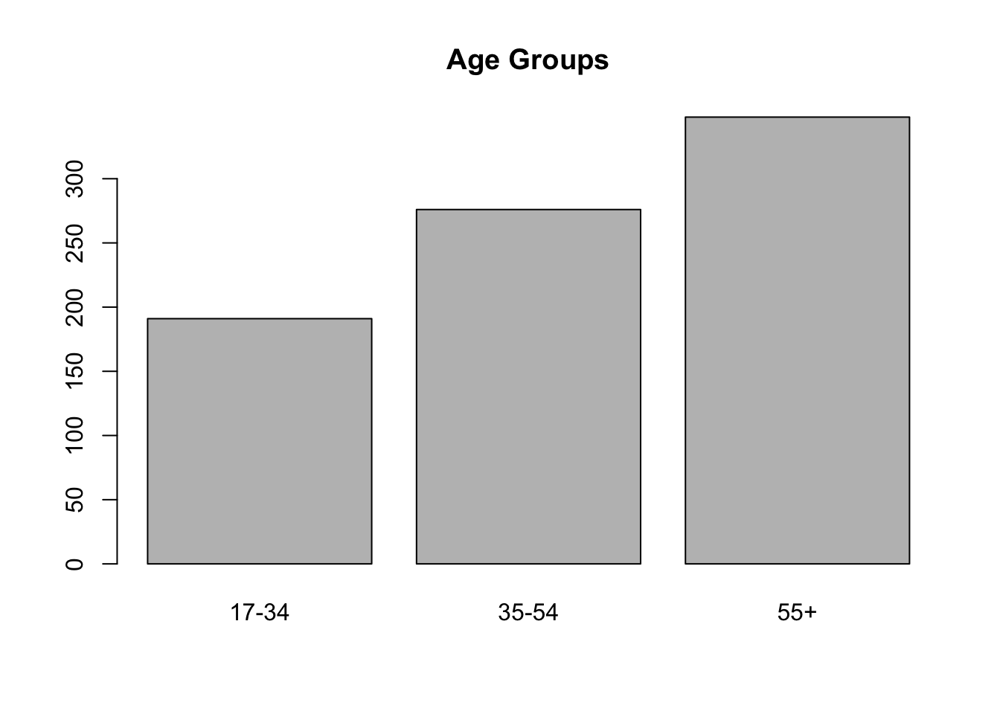

Regression analysis
The simple and multiple regression model
Learning objectives
- Understand the concept of statistical model
- Understand the concept of linear regression model
- Know how to fit a linear regression model with R
- Know how to interpret the results of linear regression models
- Understand the concept of goodness of fit and know how to evaluate it
- Understand the assumptions of the linear regression model and know how to evaluate them
What is a model?
A model is an approximate and simplified representation of a real phenomenon which captures its most distinctive features (i.e., trends, patterns, etc).
A mathematical model is a model built from mathematical stuff, such as numbers, formulas, equations, and so on.
A statistical model is a special kind of mathematical model, informed by data and built to predict phenomena characterized by a certain degree of uncertainty, and/or to test out hypotheses about how the system being modeled actually works.
Example: the mean as a simple data model
For example, we said the mean can be considered as a simple data model. Indeed, it is conceivable as a synthetic, simplified and approximate representation of the distribution of a variable. It is a mathematical model, as it is a number, and a statistical model, as it is informed by data and implies a certain level of uncertainty. Actually, the mean is just a rough representation of a variable. In fact, single values can be more or less in line with the mean. The mean is only the value that represents, on average, the different values of a variable. We can also quantify the uncertainty in this type of simple model thanks to the standard deviation. Standard deviation can be intended as an approximate measure of the average distance between the data points and the mean. A low standard deviation indicates that values are clustered close to the mean. In that case, the mean can be an excellent model. A high standard deviation means that the values are generally distant from the mean (in this case, the mean can be a relatively poor model of the variable).
Example: Take a group of four friends whose monthly income is 1,000 euros, 1,500 euros, 4,000 euros and 7,000 euros respectively. Let’s use the mean to build a simple model of their income. We can see that the mean income is EUR 3,375. It is not a very good approximation of the income of these people, if you want to use it to predict the income of each member of the group. The standard deviation is in fact high (SD = 2,750 euro), meaning that there is therefore a great deal of variability and uncertainty: on average, the members’ income is 2,750 euros far from the mean.
income <- c(1000, 1500, 4000, 7000)
mean(income)[1] 3375sd(income)[1] 2750Now consider a group of four friends having a monthly income of EUR 1,000, EUR 1,500, EUR 1,300 and EUR 900 respectively. Let’s use the mean to build a simple model of their income. We can see that the mean income is EUR 1,175, with a low standard deviation (SD = 275). This group is more homogeneous as far as income is concerned, and the mean is a pretty good model of the income of each member.
income <- c(1000, 1500, 1300, 900)
mean(income)[1] 1175sd(income)[1] 275.3785The mean in regression analysis
In linear regression, the mean is particularly important:
- It is used as a baseline against which to compare the utility of the model. Linear regression modeling attempts to identify variables that help explain/predict another variable better than its own average. The model using the mean that is used as a baseline is also called the null model.
- The linear regression model attempts to predict the mean value of a variable, given one or more other variables.
Linear models
A linear model is a special kind of statistical model based on linear relationships (see the Pearsons’ correlation coefficient) between two or more variables.
It is represented as a mathematical equation that links one (in case of a simple linear regression model) or more input variables (in case of a multiple linear regression model) to an output variable Y, by exploiting information contained in the association between the inputs and the output.
- The input variables are also called “predictors”, or “independent”, “explanatory”, or “antecedent” variables.
- The output variable is also called “outcome”, “dependent”, or “consequent” variable.
Linear regression models, in their simplest form, can be used for answering questions of the “whether” or “if” variety. These questions ask whether two variables are correlated, causally or otherwise (explanation), or if something is more or less likely to happen in one set of circumstances or conditions than another (prediction).
- Prediction: predict values taken by the dependent variable when we only know the values taken on by the independent variable(s) (e.g., predict income based on sex and level of education);
- Explanation: explaining the structure of a phenomenon by testing hypotheses about the relationships between dependent and independent variables (i.e., is there a relationships between two variables? How strong is it?)
To do that, regression analysis computes an equation such that, given the input variables, the result of the equation yields:
- An estimate of the dependent variable (prediction).
- A measure of the importance and statistical significance of the independent variables (explanation).
The equation form
The simple linear regression model is the simplest form of a linear regression model, in that it contains only a single independent variable (\(X\)). The general form of the equation is the following:
\[Y_j = i + bX_j + e_j\]
For example, \(Y\) could be income, and \(X\) could be a variable used to try to explain/predict it, say level of education.
The multiple linear regression model is an extension of this simpler model, which includes more than one independent variable. For example, it may be used to predict income based on level of education, sex, and other variables.
\[Y_j = i + b_1X_{1j} + b_2X_{2j} + ... + e_j\]
From a data set containing the values of the \(Xs\) and \(Y\) variables, linear regression modeling finds the weights \(b_1\), \(b_2\) (referred to as regression coefficients) that, multiplied by the values of the variable, represents the best approximation of the values of \(Y\) in the equation. To estimate the coefficients of the model, the most common procedure is referred to as ordinary least squares (OLS) criterion.
Multiple linear regression model
In practice, the single linear regression model is never used. If you are only interested in the relationship between two variables, you can calculate a correlation coefficient.
However, the problem with the correlation coefficient is that the relationships between two variables is always ambiguous, and alternative explanations abound. For example, the correlation between income and education can simply reflect a difference in the status of the family of origin. Wealthier families have more resources and connections, send their sons and daughters to a better school and help them find better jobs, resulting in higher incomes.
In general terms, what makes the association between two variables \(X\) and \(Y\) ambiguous, leading to alternative explanations, is that people who differ on X and Y also likely differ on many other things, and it may be those things that are responsible for the association.
Multiple regression gives a researcher a means of engaging in a kind of mathematically aided counterfactual reasoning by estimating what the association between each independent variable X and the dependent variable Y would be if people did not differ on the other independent variables in the regression model. It does this by “mathematically equating” people (or whatever the unit of analysis is) on those variables. This equating process is also refferred to as partialing out those other variables from the association between \(X\) and \(Y\), or statistically control of those variables.
Partial out: “to give (a variable) a fixed value while considering the relationship between two related variables” (Merriam-Webster)
For example, to estimate the effect of level of education on income, we could fit a multiple linear regression model. This model would include variables that we think are associated with income. For example, level of education, wealth of the family of origin, and a measure of social connection. This model can estimate the effect of education on income, holding constant all other independent variables (i.e., net of the effect of other variables). In practical terms, this means that the regression model shows an estimate of the effect of education on income among individuals with families of the same status and with the same type of social connections, so this variables should no longer have a confounding effect on our estimate of the effect of education.
Elements of the linear model equation
To present the main elements of a linear regression model, let’s consider its simplest form:
\[Y_j = i + bX_j + e_j\]
The index j
\(_j\) is any unique observation/case within the dataset. Since rows represent cases, you can view the subscript \(_j\) as a row in a dataset.
data.frame(j = 1:5,
Y = c(12, 23, 34, 54, 45),
X = c(10, 35, 45, 57, 87)) j Y X
1 1 12 10
2 2 23 35
3 3 34 45
4 4 54 57
5 5 45 87The index may also be omitted and the regression equation represented as \(Y = i + bX + e\), but it makes it explicit that, for each case, the equation establishes a relationships between the values of the variable \(Y\) (the dependent or outcome variable) and \(X\) (the independent or antecedent variable).
Intercept
\[Y_j = i + bX_j + e_j\]
\(i\) is a numerical coefficient estimated by the regression model. It is a constant (i.e., a fixed value) and is referred to as intercept or constant. It is the average (mean) value of \(Y\) when the independent variable(s) assume the value 0.
Although the intercept is mathematically significant, it often makes no sense and cannot be interpreted. It is not meaningful when:
- the independent variables do not include zero in their data range
- this value is not significant or even impossible
For example, if we predict the weight of people based on height, the intercept has no substantial meaning, because there is no person with a height equal to zero. In case like this, the intercept can be ignored.
Regression coefficient
\[Y_j = i + bX_j + e_j\]
\(b\) (or beta) is a numerical coefficient estimated by the regression model (e.g., through the OLS procedure). It is referred to as regression coefficient and represents the weight assigned to the values of the variable \(X\). It represents the average change in \(Y\) for every one unit increase in \(X\). When using a multiple linear regression model (\(Y_j = i + b_1X_{1j} + b_2X_{2j} + ... + e_j\)). It represents the average change in \(Y\) for every one unit increase in \(X\), holding all other independent variables constant.
Error
\(e\) is the error or residual, and represents the imprecision and uncertainty in the estimate. It is the difference between the values of Y estimated by the model, and the true Y values.
Fit a linear regression model with R
The R function to fit a linear regression model is lm().
The function takes at least two arguments separated by a tilde (~ check how to write that with your specific keyword. You can also copy it from the help by typing ?tilde):
- To the left of the tilde is the dependant variable (\(Y\))
- To the right of the tilde is the independent variables (\(X\)) separated with the plus (+) symbol.
We also use the argument data for the name of the dataset.
The function summary is used to see the results of the model fitting functions.
Example
Load the dataset “glbwarm”.
# load the dataset
glbwarm <- read.csv("data/glbwarm.csv")Simple linear regression
Let’s fit a simple linear regression model that predicts support for government action to mitigate climate change (independent variable \(Y = govact\)), based on negative emotion about this issue (\(X = negemot\)).
lm1 <- lm(govact ~ negemot, data = glbwarm)The function summary produce the output.
summary(lm1)
Call:
lm(formula = govact ~ negemot, data = glbwarm)
Residuals:
Min 1Q Median 3Q Max
-4.3285 -0.6731 0.1018 0.7554 3.2142
Coefficients:
Estimate Std. Error t value Pr(>|t|)
(Intercept) 2.75732 0.09866 27.95 <2e-16 ***
negemot 0.51424 0.02548 20.18 <2e-16 ***
---
Signif. codes: 0 '***' 0.001 '**' 0.01 '*' 0.05 '.' 0.1 ' ' 1
Residual standard error: 1.111 on 813 degrees of freedom
Multiple R-squared: 0.3338, Adjusted R-squared: 0.333
F-statistic: 407.3 on 1 and 813 DF, p-value: < 2.2e-16Multiple linear regression
The following code fits a multiple linear regression model that predicts support for government action to mitigate climate change (independent variable \(Y = govact\)), based on several variables.
lm2 <- lm(govact ~ negemot + posemot + ideology + sex + age,
data = glbwarm)summary(lm2)
Call:
lm(formula = govact ~ negemot + posemot + ideology + sex + age,
data = glbwarm)
Residuals:
Min 1Q Median 3Q Max
-4.8381 -0.6834 0.0705 0.7008 3.4266
Coefficients:
Estimate Std. Error t value Pr(>|t|)
(Intercept) 4.063607 0.205323 19.791 < 2e-16 ***
negemot 0.440781 0.026433 16.676 < 2e-16 ***
posemot -0.026778 0.028145 -0.951 0.342
ideology -0.218269 0.027043 -8.071 2.51e-15 ***
sex -0.010066 0.076743 -0.131 0.896
age -0.001309 0.002371 -0.552 0.581
---
Signif. codes: 0 '***' 0.001 '**' 0.01 '*' 0.05 '.' 0.1 ' ' 1
Residual standard error: 1.067 on 809 degrees of freedom
Multiple R-squared: 0.3883, Adjusted R-squared: 0.3845
F-statistic: 102.7 on 5 and 809 DF, p-value: < 2.2e-16Output
Consider the output of the “lm2” multiple linear regression model.
summary(lm2)
Call:
lm(formula = govact ~ negemot + posemot + ideology + sex + age,
data = glbwarm)
Residuals:
Min 1Q Median 3Q Max
-4.8381 -0.6834 0.0705 0.7008 3.4266
Coefficients:
Estimate Std. Error t value Pr(>|t|)
(Intercept) 4.063607 0.205323 19.791 < 2e-16 ***
negemot 0.440781 0.026433 16.676 < 2e-16 ***
posemot -0.026778 0.028145 -0.951 0.342
ideology -0.218269 0.027043 -8.071 2.51e-15 ***
sex -0.010066 0.076743 -0.131 0.896
age -0.001309 0.002371 -0.552 0.581
---
Signif. codes: 0 '***' 0.001 '**' 0.01 '*' 0.05 '.' 0.1 ' ' 1
Residual standard error: 1.067 on 809 degrees of freedom
Multiple R-squared: 0.3883, Adjusted R-squared: 0.3845
F-statistic: 102.7 on 5 and 809 DF, p-value: < 2.2e-16The output is composed of the following sections:
Residuals
At the top of the output, there is the five-number summary of Residuals (the errors). In linear regression, the distribution is expected to have some characteristics. These will be discussed later when presenting the linear regression assumptions.
R-squared
At the bottom of the table, there is general information on the model. Of particual interest is the R-squared and the p-value:
- After fitting a linear regression model, you need to determine how well the model fits the data. Does it do a good job of explaining changes in the dependent variable? The R-squared is a goodness-of-fit measure which indicates on a scale from 0 to 1 the extent to which the model can explains/predicts the dependent variable. In more technical terms, is the proportion of variance (of the dependent variable) explained by the model (i.e., how well can we predict the value of Y based on the values of Xs?). Adjusted R-squared add a penality based on the complexity of the model (number of variables) and can be preferred when fitting multiple linear regression models. Both the Multiple R-squared and the Adjusted R-squared values can be reported. It can be reported as a percentage, for example, in this case, the model explains about 38% of the variance.
- The last row of the output reports a p-value and the results from the F-statistic. We said that linear regression modeling attempts to identify variables that help explain/predict another variable better than its own average (mean). The F-statistic compares the fitted linear model with a model that only uses the mean of the dependent variable. If the p-value is below 0.05, the fitted model is significantly better that a model using only the mean.
The p-value is expressed in scientific notation (2.2e-16). To convert to a common number, use the function format, adding the number you want to convert, and the option scientific=FALSE. For example:
format(2.2e-16, scientific=FALSE)[1] "0.00000000000000022"Coefficients
In the middle of the output, there is the Coefficients table:
summary(lm2)
Call:
lm(formula = govact ~ negemot + posemot + ideology + sex + age,
data = glbwarm)
Residuals:
Min 1Q Median 3Q Max
-4.8381 -0.6834 0.0705 0.7008 3.4266
Coefficients:
Estimate Std. Error t value Pr(>|t|)
(Intercept) 4.063607 0.205323 19.791 < 2e-16 ***
negemot 0.440781 0.026433 16.676 < 2e-16 ***
posemot -0.026778 0.028145 -0.951 0.342
ideology -0.218269 0.027043 -8.071 2.51e-15 ***
sex -0.010066 0.076743 -0.131 0.896
age -0.001309 0.002371 -0.552 0.581
---
Signif. codes: 0 '***' 0.001 '**' 0.01 '*' 0.05 '.' 0.1 ' ' 1
Residual standard error: 1.067 on 809 degrees of freedom
Multiple R-squared: 0.3883, Adjusted R-squared: 0.3845
F-statistic: 102.7 on 5 and 809 DF, p-value: < 2.2e-16- Estimate reports the regression coefficients of the model (i.e., the \(b\) (beta) “weight” of independent variables).
- Std. Error is the standard error of the coefficients (estimates), i.e., their standard deviations. We know that standard deviations is a measure of spread, and a measure of the precision with which the regression coefficient is measured.
- t value is the “t statistic” and is the coefficient divided by its standard error. It’s used to calculate the “Pr (>|t|)” which is a way to say p-value, and is the number that you really need to look at. A p-value below 0.05 is marked with at least an asterisk and is said to be statistically significant. It indicates that the independent variable has a statistically significant impact on the dependent variable. In other words, we can conclude that there is a true association between the variables, since it would be unlikely to observe similar values if such an association did not exist.
Notice that analysis is carried out on a “sample” in order to draw conclusions on a “population”. A sample is a subset of cases (e.g. the 815 Americans in the GLBWARM dataset) collected from a larger population (e.g. the entire American population). The sample represents the population on a small scale. A “statistically significant” relationship indicates that the observed relationship is a true relationship and not an artifact in the data sample we analysed. It suggests that the relationship exists both in the observed data (a sample) and in the population from which the data originate.
Interpretation
Consider the output of the “lm2” multiple linear regression model.
summary(lm2)
Call:
lm(formula = govact ~ negemot + posemot + ideology + sex + age,
data = glbwarm)
Residuals:
Min 1Q Median 3Q Max
-4.8381 -0.6834 0.0705 0.7008 3.4266
Coefficients:
Estimate Std. Error t value Pr(>|t|)
(Intercept) 4.063607 0.205323 19.791 < 2e-16 ***
negemot 0.440781 0.026433 16.676 < 2e-16 ***
posemot -0.026778 0.028145 -0.951 0.342
ideology -0.218269 0.027043 -8.071 2.51e-15 ***
sex -0.010066 0.076743 -0.131 0.896
age -0.001309 0.002371 -0.552 0.581
---
Signif. codes: 0 '***' 0.001 '**' 0.01 '*' 0.05 '.' 0.1 ' ' 1
Residual standard error: 1.067 on 809 degrees of freedom
Multiple R-squared: 0.3883, Adjusted R-squared: 0.3845
F-statistic: 102.7 on 5 and 809 DF, p-value: < 2.2e-16How can we interpret this output?
R-squared
First, consider the R-squared: the model explains a statistically significant (p < .001) and substantial proportion of variance (Multiple R-squared: 0.3883, Adjusted R-squared: 0.3845).
Then turn your attention to the estimates.
Intercept
- The intercept is the mean value of Y when all the independent variables are set to zero. Is that meaningful? You need to consider the distribution of your variables (e.g., using the five-number summary). For example, zero does not even exist in the distribution of negemot and ideology. Therefore, the intercept is not meaningful.
summary(glbwarm$negemot) Min. 1st Qu. Median Mean 3rd Qu. Max.
1.000 2.330 3.670 3.558 5.000 6.000 summary(glbwarm$ideology) Min. 1st Qu. Median Mean 3rd Qu. Max.
1.000 3.000 4.000 4.083 5.000 7.000 Coefficients
Statistical significance
- Take into consideration the statistical significance of the variables. Only two variables are statistically significant: negemot and ideology. They are significant at p < 0.001 (three asterisks). This means that there is a 1 in 1000 chance of observing such values in a sample, if there was no real relationship between the variables in the population.
- The other variables are not statistically significant. This means that we cannot conclude that these independent variables are related to the dependent variable.
Interpretation of coefficients
The coefficients of a multiple regression model are measures of partial association that quantify the component of the association between an independent and a dependent variable that is unique to that independent variable, relative to other independent variables in the model.
We can use this formulation:
- Holding all other variables constant (or, “all other variables being equal”, or a similar formulation), two cases that differ by one unit on the negative emotion scale, are estimated to differ by 0.44 unit on average in their support for government action to mitigate climate change. Or also: a one-unit increase on the negative emotion scale (negemot) would result in a 0.44 increase in support for government action to mitigate climate change.
- Holding all other variables constant, two cases that differ by one unit on the ideology scale, are estimated to differ by -0.22 unit in their support for government action to mitigate climate change, with cases one unit higher on that scale (i.e., republicans) estimated to be -0.22 unit lower in their support for government action. Or also, a one-unit increase in the ideology variable would result in a 0.22 decrease (notice the negative sign: -0.218269) in support for government action to mitigate climate change.
Interpreting dichotomous variables
Dichotomous variables take just two values, usually represented by 0 and 1. Within the glbwarm dataset, the variable sex is a dichotomous variable. Females are encoded as 0 and males as 1. In the dichotomy case, a change of 1 unit corresponds to the switching of 0 to 1. That is to say, from the category 0 (e.g., females) to category 1 (e.g., males).
The coefficients estimate the difference in the mean of the dependent variable between two cases that differ by one unit in the independent variable, all other variables being constant. In the dichotomous case, this difference is \(1 - 0\), that is to say, the difference between males and females.
Therefore, the coefficient for sex (-0.010066) indicates that males are estimated to be, on average, 0.01 units less (notice the negative sign) supportive of government action than females.
But we said that the difference is not statistically significant. Therefore, we can conclude that there is no evidence of systematic gender differences in support for government action.
Residuals and assumptions
The intepretation of residulas requires to discuss the assumptions of linear models.
Linear regression is founded on some assumptions. The violation of these assumptions can have adverse effects on the interpretation of the model and on inference, therefore we should be mindful of the assumptions the regression model makes. The main assumptions of the linear regression model are the following:
- Linearity: Linearity states that the relationships between the variables in the model are linear in nature, or at least approximately linear. For obvious reasons, it’s wrong to use a linear model to understand non-linear relations. Linearity is violated, for instance, when for low values of \(X\), a one unit increase in \(X\) corresponds to an increase of one unit in \(Y\), but for high values of \(X\), one unit increase in \(X\) corresponds to an increase of three units in \(Y\).
- Normality: The assumption of normality states that the errors (i.e. residuals) are normally distributed. In general, linear regression is considered to be “robust” to mild violation of normality. Research suggests that only the most severe violations of the normality assumption substantially affect the validity of statistical inferences from a regression analysis unless the sample size is quite small.
- Homoscedasticity: Homoscedasticity (or homoskedasticity) states that errors in estimation are almost equal across the range of the estimated values of the outcome \(\hat Y\). When this condition is not met, the errors in estimation are said to be heteroscedastic.
- Independence: the errors in estimation should be statistically independent. In the most basic terms, two things are independent if information about one gives no information about the other. A typical violation of independence is the autocorrelation in time series data, which has to be handled with specific time series techniques.
- Outliers: Observations particularly different from the average are called outliers. They may have excessive influence over the coefficient estimates (“influential observations”). If so, they must be thoroughly inspected.
- No multicollinearity: Multicollinearity is the occurrence of high intercorrelations among two or more independent variables in a multiple regression model. It makes it difficult to distinguish the effect of the variables.
Check the assumptions
In R there are four “diagnostic” plots you can use to assess the assumptions of the model.
You can visualize the plots by using the funtion plot applied to the “object” corresponding to your fitted model. You can visualize the plots together by using par(mfrow=c(2,2)) before calling the plot function. In this way, you create a 2x2 layer to show the 4 main diagnostic plots on the same page. You can also visualize a single plot by using the number of the plot inside the plot function (e.g.: plot(lm_object, 1))).
par(mfrow=c(2,2))
plot(lm2)
In general, you want the Normal Q-Q plot to show points along a diagonal line, and the other three plots showing randomly scattered points, without any evident systematic pattern.
Points showing a conic shape in the Residuals vs Fitted and Scale-Location plots are indicative of an heteroskedasticity problem (violation of the homoscedasticity assumption). Ideally, you should see a roughly horizontal line with equally spread points. A statistical test for checking homoscedasticity is the Breusch-Pagan test. It is included in the lmtest library. A p-value < 0.05 suggests heteroskedasticity.
install.package("lmtest")library(lmtest)Loading required package: zoo
Attaching package: 'zoo'The following objects are masked from 'package:base':
as.Date, as.Date.numericbptest(lm2)
studentized Breusch-Pagan test
data: lm2
BP = 14.787, df = 5, p-value = 0.01131Heteroskedasticity does not impact coefficients, but affects statistical tests (e.g., tests that conclude whether the coefficients are statistically significant). There are different ways to mitigate or resolve this and other assumption issues. A way is to correct the regression model with Heteroscedasticity-Consistent Standard Errors. In R you need the lmtest and sandwich package.
install.package("sandwich")library(lmtest)
library(sandwich)
coeftest(lm2, vcov = vcovHC(lm2, type = "HC3"))
t test of coefficients:
Estimate Std. Error t value Pr(>|t|)
(Intercept) 4.0636065 0.1965257 20.6772 < 2.2e-16 ***
negemot 0.4407807 0.0282082 15.6260 < 2.2e-16 ***
posemot -0.0267777 0.0317203 -0.8442 0.3988
ideology -0.2182689 0.0289974 -7.5272 1.384e-13 ***
sex -0.0100662 0.0753805 -0.1335 0.8938
age -0.0013087 0.0022916 -0.5711 0.5681
---
Signif. codes: 0 '***' 0.001 '**' 0.01 '*' 0.05 '.' 0.1 ' ' 1You can also see that certain dots are marked by a number. These are points with unexpectedly high residuals (error) and you could inspect them to find out why (e.g., to exclude there are errors in the dataset). Also check if any point in the Residuals vs Leverage plot falls outside of Cook’s distance (a red dashed lines). These points are considered to be influential observations. Influential points have a large influence on the model and should be carefully inspected. In this case there are no influential points, and the red dashed line is not even displayed.
To verify multicollinearity you can also calculate the VIF (“Variance Inflation Factor”). The function to calculate it is vif, and is included in the package car. The smallest possible value of VIF is one (absence of multicollinearity), and as a rule of thumb, a VIF value that exceeds 5 or 10 indicates a problematic amount of collinearity.
# install the package
install.packages("car")library(car)Loading required package: carDatacar::vif(lm2) negemot posemot ideology sex age
1.166374 1.026410 1.194399 1.052894 1.071034 Reading, resources, excercises
Readings
- Chapter 2 - Regression fundermentals (Moodle)
Resources
There are plenty of resources online about linear regression and R. For example:
- This website provides a clear explanation of regression diagnostic plots
- Also this youtube video provides a simple explanation of regression diagnostic plots.
Excercises
Use the estress dataset (estress.csv) to perform a multiple linear regression model.
Description of the dataset
The participants in the “estress” study (162 male, 100 female, SEX in the data, 0 = female, 1 = male) were asked a series of questions about how they felt their business was doing.
Their responses were used to construct an index of economic stress (ESTRESS in the data file, with high scores reflecting greater economic stress).
They were also asked the extent to which they had various feelings related to their business, such as “discouraged,” “hopeless,” “worthless,” and the like, an aggregation of which was used to quantify business-related depressed affect (AFFECT in the data, with higher scores reflecting more depressed affect).
They were also asked a set of questions to quantify their intentions to withdraw from entrepreneurship in the next year (WITHDRAW in the data, with higher scores indicative of greater withdrawal intentions).
There is also a measure of “entrepreneurial self-efficacy” which indexes a person’s confidence in his or her ability to successfully engage in various entrepreneurship-related tasks such as setting and meeting goals, creating new products, managing risk, and making decisions (ESE in the data file).
The dataset also includes the length of time in the business, in years (TENURE in the data), and the age of these entrepreneurs (AGE).
Excercise
Explore the variables (five number summary, standard deviation) and the dataset (sample size).
Fit a linear regression model to predict/explain withdraw intention based on the following independent variables: affect, sex, estress, age, tenure, ese.
Interpret the model.
Check out the diagnostic plots (do you see any evident pattern in the points? Are the dots grouped along a diagonal line in the normal Q-Q plot?. Also calculate the Variance Inflation Factor (VIF) using the function vif in the car package.
Test your understanding of the concepts and your interpretation of the linear model and assumptions by answering the questions in the quiz available on Moodle (by Tuesday). The quiz is just for your self-evaluation (i.e., it is not graded).